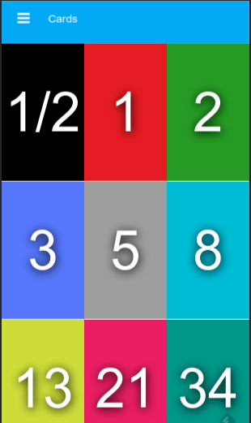

Pocker Planning

>
Este servicio web tiene por objetivo ayudar a los equipos de desarrollo que utilizan la metodología scrum. Su principal funcionalidad consiste en un servidor en tiempo real de comunicación en el cual por medio de su interfaz permite a múltiples usuarios acceder a una sala, declarar su nombre y mediante el uso de cartas indicar la estimación de la dificultad del desarrollo. Esta información se comunica en tiempo real con todos los usuarios de la misma sala permitiendo así trabajar incluso con personas que se encuentran de forma remota. Su diseño esta orientado a dispositivos móviles lo que facilita el uso de las cartas para realizar estimaciones. Las tecnologías utilizadas son Node JS, Express, socket io y HTML5.
Ver en GitHub